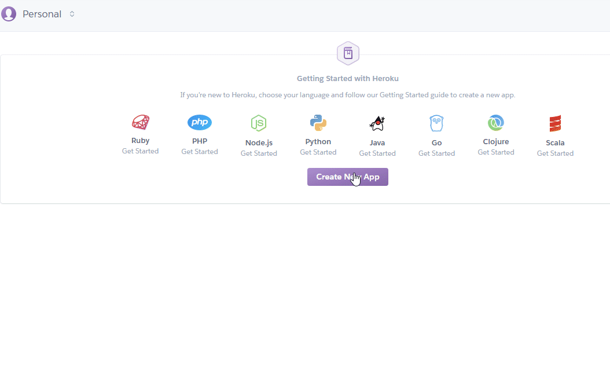
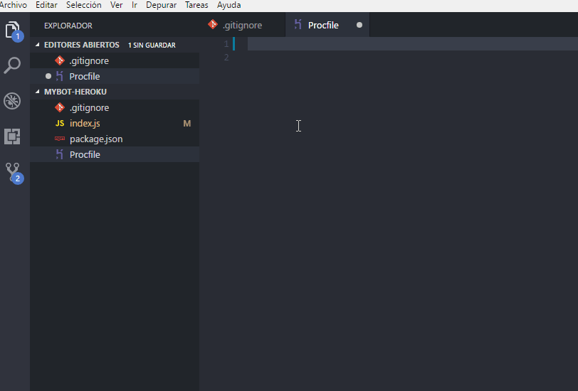
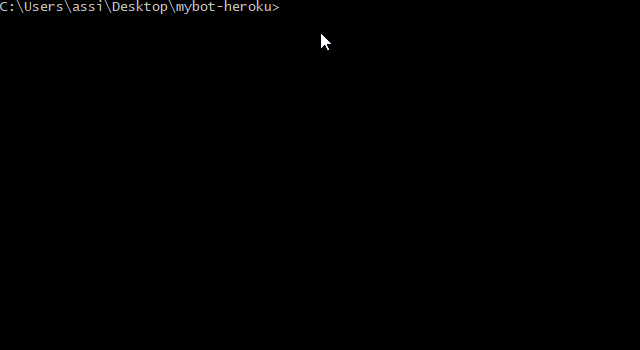
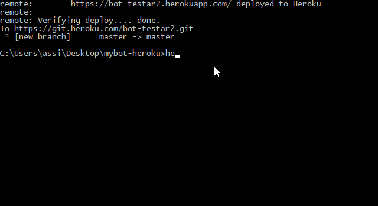
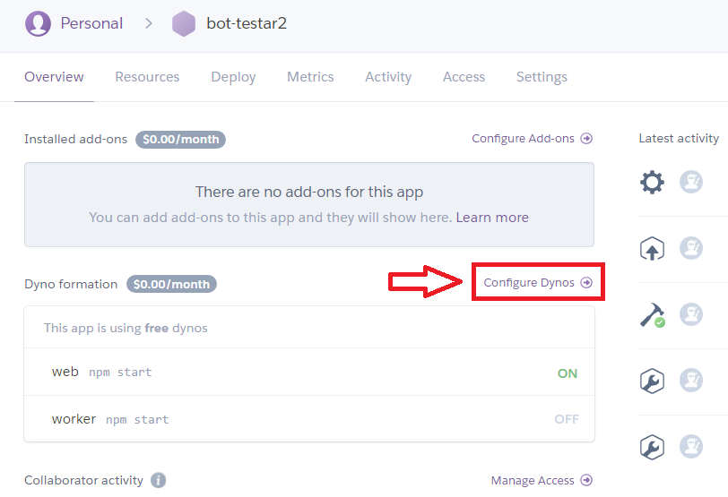
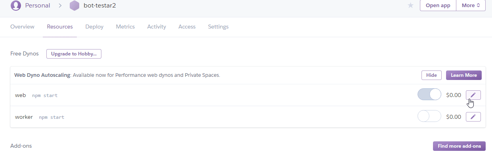
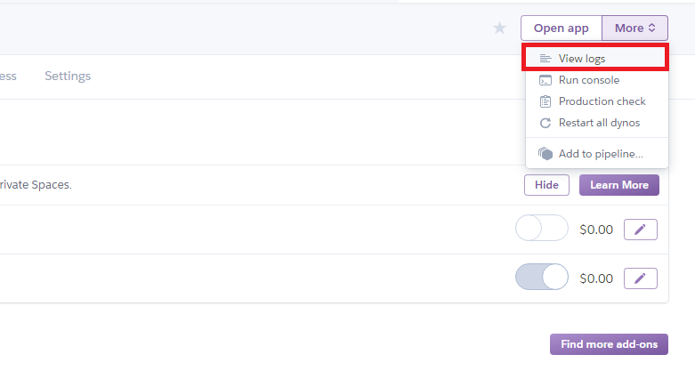
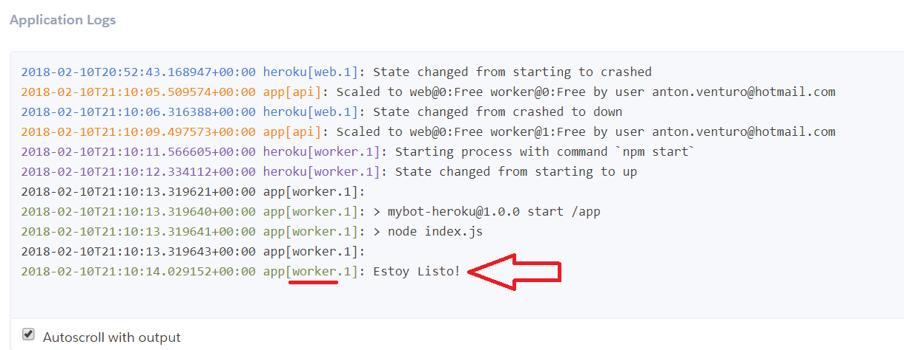

MyBot Guía
Alojando una app en Heroku.com
Heroku es una plataforma en la nube que ofrece servicio para alojar e implementar aplicaciones web en varios lenguajes de programacion, como Node.js, Ruby, Python, Java, PHP y Go.
Las aplicaciones se corren desde un servidor Heroku usando Heroku DNS Server para apuntar al dominio de la aplicación (nombreaplicacion.herokuapp.com). Cada aplicación corre sobre un motor a través de una “red de bancos de prueba” que consta de varios servidores. El servidor Git de Heroku maneja los repositorios de las aplicaciones que son subidas por los usuarios.
Heroku ofrece un plan de alojamiento gratuito, ¡así que no tienes que pagar nada en absoluto!. Ahora ya sabemos que podemos utilizar heroku para almacenar nuestras aplicaciones/bots.
Empezando con Heroku
Lo primero que debemos hacer es crear una cuenta en Heroku, una vez la hayamos creado y confirmado podemos crear un sencillo proyecto utilizando nodejs.
Ingresamos a "create new app".

Implementación
Puedes configurar Heroku de dos formas que te permitiran implementar fácilmente cualquier cambio realizado en su bot:
- Heroku CLI : con el poder de Git, git push heroku master todo lo que necesitarás hacer con la interfaz de línea de comando fácil de usar de Heroku.
- GitHub : para la implementación automática de su bot siempre que se actualice su repositorio GitHub configurado.
En esta guía vamos a usar Heroku CLI con el poder de Git, para eso debemos instalar lo siguiente:
- Heroku CLI (instalar según la versión de su sistema operativo).
- Git ya que heroku trabaja directamente con git remotamente.
Conectando a heroku
Para poder conectar a heroku remotamente debemos abrir nuestra consola (CMD) y escribir lo siguiente:
Primero veremos si se instalo correctamente heroku en su PC:
heroku --version- Conectamos a heroku a travez de comandos:
heroku loginUna vez lo hagamos, nos pedirá nuestras credenciales de heroku, introduce tu email y password, si todo ha ido bien nos regresara denuevo a la ruta, perfecto.
Enter your Heroku credentials.
Email: user@example.com
Password: ********
Logged is as user@example.com
Ahora debemos inicializar nuestro repositorio git y subir el proyecto(Carpeta) completo.
Mi proyecto
Creamos una carpeta para iniciar su bot, es recomendable crear un nuevo bot para evitar problemas con su bot principal, ya sea en la importación de los archivos(.js, .json, .sqlite, etc.) o instalación de npm(packages) a heroku.
En la misma consola donde iniciaste el login de heroku, ingresar a la ruta del bot:
cd desktop/mycarpetabotAgregar los siguientes archivos a su carpeta bot:
- index.js
const Discord = require('discord.js');
const client = new Discord.Client();
client.on('ready', () => {
client.user.setActivity('bot en heroku', {type: 'WATCHING'});
console.log('Listo!');
});
let prefix = process.env.PREFIX;
client.on('message', message => {
if (!message.content.startsWith(prefix) || !message.guild) return;
if (message.author.bot) return;
const cont = message.content.split(' ').slice(1);
const args = cont.join(' ');
if (message.content.startsWith(prefix+'ping')){
message.channel.send('pong');
} else if (message.content.startsWith(prefix+ 'say')) {
if (!args) return;
message.channel.send(args);
}
});
client.login(process.env.TOKEN);
- package.json
{
"name": "mybot-heroku",
"version": "1.0.0",
"description": "An in-depth guide on deploying your Discord.js bot on Heroku",
"main": "index.js",
"engines": {
"node": "8.x",
"npm": "*"
},
"scripts": {
"test": "echo \"Error: no test specified\" && exit 1",
"start": "node index.js"
},
"repository": {
"type": "git",
"url": "git+https://github.com/synicalsyntax/discord.js-heroku.git"
},
"keywords": [
"heroku",
"discord.js"
],
"author": "synicalsyntax",
"license": "MIT",
"bugs": {
"url": "https://github.com/synicalsyntax/discord.js-heroku/issues"
},
"homepage": "https://github.com/synicalsyntax/discord.js-heroku#readme",
"dependencies": {
"discord.js": "^11.3.0"
}
}
- Procfile
worker: npm start
- .gitignore
gitignore link (copiar el contenido dentro tu archivo .gitignore)

el archivo .gitignore especifica los archivos que debemos ignorar y que ya no serán necesarios en heroku como: /node_modules, yarn, Thumbs.db, etc
Subir el proyecto a heroku
Ahora debemos inicializar nuestro repositorio y subir el proyecto completo utilizando Git previamente instalado, para ésto escribe los siguientes comandos en la consola donde iniciaste el login heroku:

git init- git init - inicia un repositorio git en un directorio nuevo o existente
heroku git:remote -a nombre-app-heroku - heroku git:remote - conecta remotamente tu app heroku creada en heroku.com, "bot-testar2" es el nombre de la app para esta guía, usted debe ingresar el nombre de su app heroku.
git add .- git add . - Comienza a trackear/guardar los archivos al repositorio.
git commit -m "tu mensaje"- git commit - confirma los cambios realizados. El “tu mensaje” generalmente se usa para asociar al commit una breve descripción de los cambios realizados al repositorio.
git push heroku master- git push - Empuja los cambios desde el repositorio local master a heroku.com donde esta su app.
Ahora ya tenemos nuestro proyecto subido a heroku y conectado a través de git, sólo nos queda ingresar el token y prefix remotamente.
Ingrese el siguiente comando para configurar el token y prefix de su bot.
heroku config:set TOKEN=Tokenbotsecreto PREFIX=!!
Si no a tenido ningun error durante el proceso de importar su proyecto a heroku, felicidades ya tiene su bot alojado en heroku. Ahora solo no falta configurar los Dynos de la app heroku para que su bot este activo las 24 horas.
Usando Dynos
A cada cuenta de Heroku se le asigna un grupo de horas que puede usar con los dynos gratis. Esto le ayuda a conservar sus horas de prueba gratuitas y así puede usarlas para tener su app activado por mucho tiempo.
Ingresamos al dashboard de la app en heroku.com, encontrara un panel de su app y vamos a "configure Dynos"

Desactivamos web dynos y activamos worker y confirmamos, de esta manera el bot se mantendra activo 24 horas al dia.

Verificamos si el bot inicio correctamente ingresando a "More > View logs" de la app.

Revisamos el log si se mostro el mensaje de "Estoy listo!.

Si todo esta correcto felicidades su bot ya esta activo y alojado en Heroku.
Recursos
Aquí hay algunos recursos adicionales:
- Guia discord.js-heroku - en ingles (Información adicional)
- Dynos en Heroku (Dynos planes)
Obtener ayuda
Si tiene alguna pregunta y/o duda después de leer esta guía, ingrese al servidor guía en discord: